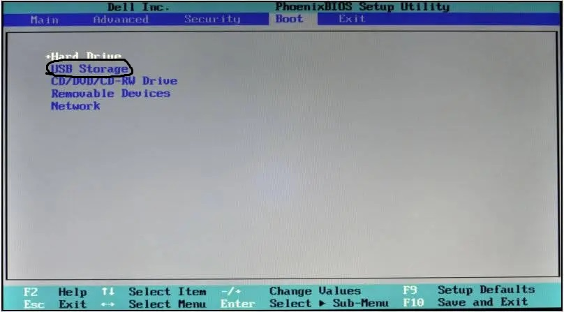
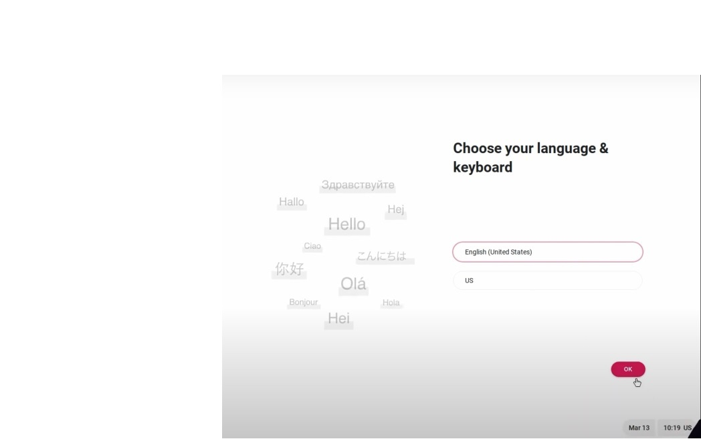

FydeOS to system operacyjny oparty na ChromeOS, który został zaprojektowany do działania na różnych urządzeniach, w tym komputerach PC, laptopach, a nawet tabletach.
Będziesz potrzebować pendrive'a o minimalnej pojemności 8 GB i zainstalowanego na komputerze oprogramowania Rufus lub BalenaEtcher.
Aby pobrać Rufus kliknij tutaj, a aby pobrać BalenaEtcher kliknij tutaj.
Musisz także pobrać plik .iso tutaj
Uruchom ponownie komputer i naciśnij odpowiedni klawisz, aby wejść do konfiguracji systemu BIOS.
Klawisz różni się w zależności od modelu komputera, ale zwykle jest to delete, F1, F2 lub F10.
Poszukaj menu Opcje rozruchu i wybierz dysk flash USB jako pierwsze urządzenie rozruchowe.
Zapisz zmiany i wyjdź z konfiguracji systemu BIOS.
Uruchom ponownie komputer i poczekaj na załadowanie instalatora FydeOS.
Postępuj zgodnie z instrukcjami wyświetlanymi na ekranie, aby zakończyć instalację.
Po zakończeniu instalacji wyjmij dysk flash USB i uruchom ponownie komputer.
Przepraszam za tę zdjęcię ale nie udało mi się tego wyciąć